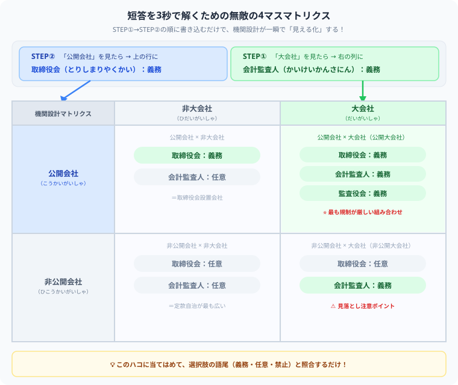

株式会社の機関設計（327条・328条）の覚え方
短答のひっかけを防ぐ最強マップ
- 機関設計は「会社の規模」と「株式譲渡制限の有無」で、必要な見張り役が変わる論点です。
- 327条は取締役会・監査役などの連動、328条は大会社の会計監査人などを押さえる条文です。
- 短答では「置ける」と「置かなければならない」の入れ替えが危険です。
この記事では、CPA会計学院テキストで重視されている「公開会社・大会社では利害関係者保護のために厳格な機関設計ルールが置かれる」「非公開非大会社では定款自治により柔軟な設計が認められる」という発想を軸に、会社法327条・328条を整理します。丸暗記ではなく、なぜその機関が必要なのかまで言える状態を目指します。
❓ 株式会社の機関設計って、結局なにを覚える論点ですか？
機関設計とは、株式会社にどの機関を置くかを決めるルールです。会社法では、すべての株式会社に株主総会と取締役が必要です。そのうえで、取締役会、会計参与、監査役、監査役会、会計監査人、監査等委員会、指名委員会等を、一定のルールのもとで設置します。
ここで大事なのは、「機関名を覚える」だけで終わらないことです。企業法の問題では、どの会社にどの機関が必要か、なぜその組み合わせになるのかが問われます。
🔍 327条と328条は何が違う？検索する前にここだけ押さえよう
ざっくり言うと、327条は「ある機関を置いたら、別の機関も必要になる」という連動ルールです。328条は「大会社なら、会計監査人などの監査体制が必要になる」という規模に着目したルールです。
| 条文 | ざっくり役割 | 見るポイント |
|---|---|---|
| 327条 | 機関どうしの連動ルール | 公開会社・監査役会設置会社・監査等委員会設置会社・指名委員会等設置会社は取締役会が必要。取締役会設置会社や会計監査人設置会社では監査役との関係も問題になります。 |
| 328条 | 大会社の追加ルール | 公開大会社は監査役会と会計監査人が必要。非公開大会社も会計監査人が必要。 |
❓ 「置くことができる」と「置かなければならない」はどう見分ける？
短答式で怖いのは、知っている機関名が出てきた瞬間に安心して、語尾を読み飛ばすことです。会社法の機関設計では、「置ける」のか、「置かなければならない」のか、「置いてはならない」のかが勝負になります。
🔍 公開会社・非公開会社で機関設計はどう変わる？
公開会社では、株主が頻繁に変動し、株主が無個性になることが想定されます。つまり、株主自身が経営を細かく見張ることを期待しにくいのです。そこで、合理的な会社経営を図りつつ、株主に代わる監督の仕組みとして取締役会の設置が義務づけられます。
一方、公開会社でも大会社でもない株式会社、つまり非公開非大会社では、定款自治を広く認め、機関設計の多様化が認められます。ここは「小さく閉じた会社ほど、柔軟に設計できる」と押さえると見通しがよくなります。
🔍 株主が動くから、取締役会で見張る
株主が頻繁に変動しやすいため、株主自身による監督に頼り切れません。取締役会が重要になります。
💡 閉じた会社だから、定款自治が広い
株主関係が比較的固定されやすく、柔軟な機関設計が認められます。
❓ 大会社になると、なぜ会計監査人が必要になるの？
大会社では、会社の規模が大きく、会社債権者などの利害関係者も多くなることが想定されます。だから、計算書類などの信頼性を確保するため、会計監査人によるチェックが重要になります。
328条では、公開大会社は監査役会と会計監査人を置かなければならず、非公開大会社も会計監査人を置かなければならないと整理できます。
💡 監査役・監査等委員会・指名委員会等設置会社はどう整理する？
ここは名前が似ていて混乱しやすいところです。ポイントは、「取締役会を前提にする制度か」「監査役を置ける制度か」を見ることです。
監査等委員会設置会社と指名委員会等設置会社は、取締役会を置かなければなりません。また、監査役を置いてはなりません。さらに、会計監査人を置かなければなりません。
🛠 短答を3秒で解くための「計算用紙の下書きハック」

これが僕の一番の秘密兵器です。機関設計の問題を見たら、選択肢を読む前にまず計算用紙に十字の線を引いて「4マスのマトリクス」を1秒でフリーハンドで書きます。縦軸が「公開会社／非公開会社」、横軸が「大会社／非大会社」の4マスです。
書いたら、次の2ステップで義務設置を埋めていきます。
🔍 短答式ではどこがひっかけになる？
機関設計のひっかけは、細かいように見えて、実はかなりパターン化できます。問題集を解くときは、正誤だけでなく「どのパターンでひっかけているか」をメモしておくと強くなります。
- 任意設置と必要設置の入れ替え
- 公開会社と非公開会社の条件入れ替え
- 大会社の会計監査人ルールの見落とし
- 公開大会社と非公開大会社の違いの混同
- 監査等委員会設置会社・指名委員会等設置会社で監査役を置けると誤認する
❓ 問題集を解くとき、どう復習すれば点数につながる？
おすすめは、選択肢ごとに「なぜその機関が必要なのか」を一言で説明する復習です。たとえば「公開会社だから株主が流動的。だから取締役会が必要」「大会社だから利害関係者が多い。だから会計監査人が必要」という形です。
結論だけを覚えると、条件が少し変わった瞬間に崩れます。でも趣旨から説明できると、初見の選択肢でも自分で戻ってこられます。
💡 本番で迷ったときの最終チェックリスト
🎮 まとめ：機関設計は暗記ではなく「会社の守り方」の設計図です
株式会社の機関設計は、条文番号だけを見ると無機質です。でも中身は、「株主や会社債権者などの利害関係者をどう守るか」という設計図です。
- 327条は、機関どうしの連動ルールとして押さえる。
- 328条は、大会社の監査体制のルールとして押さえる。
- 公開会社は、株主が流動的だから取締役会が必要になる。
- 大会社は、利害関係者が多いから会計監査人が重要になる。
- 短答では、語尾と条件の入れ替えに注意する。
ここでつまずいても、企業法が向いていないわけではありません。機関設計は、最初からスラスラ覚えられる論点ではないです。だからこそ、焦らず「誰を守るためのルールか」に戻りながら、一つずつ自分の言葉にしていきましょう。
企業法の機関設計は、最初は無機質な条文の羅列に見えますが、本質が分かればただのイージーなパズルに変わります。僕も毎日スタディクエストで冒険を記録しながら、一歩ずつ進んでいます。この記事が少しでもあなたの短答対策の武器になったら、この下にある【いいねボタン】をポチッと押してもらえると、めちゃくちゃ励みになります！一緒に合格をもぎ取りましょう！
この記事、短答の武器になりましたか？
327条・328条の迷路を一緒に抜け出せたなら、この下にある【いいねボタン】をポチッと押してもらえると、めちゃくちゃ嬉しいです！
皆さんの一押しが、次の記事を書く力になります。一緒に合格をもぎ取りましょう！
🎮 企業法のひっかけ論点も、毎日の冒険で攻略しよう
スタディクエストで学習時間を記録しながら、条文ダンジョンを少しずつ突破していきましょう。登録不要・完全無料です。